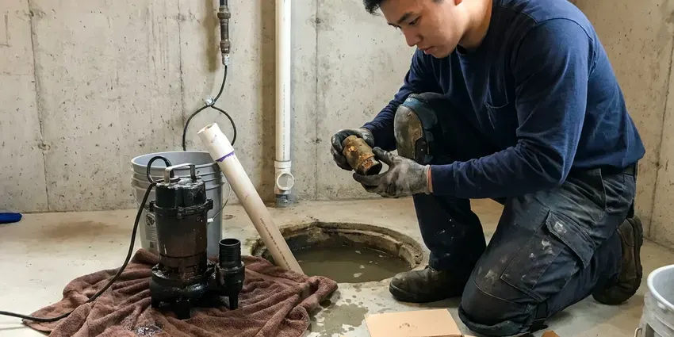
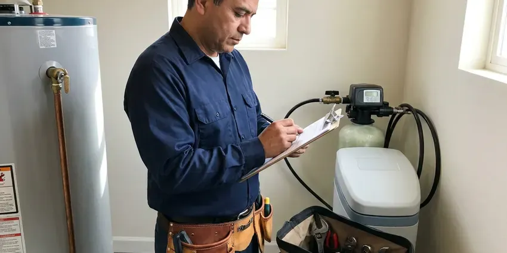
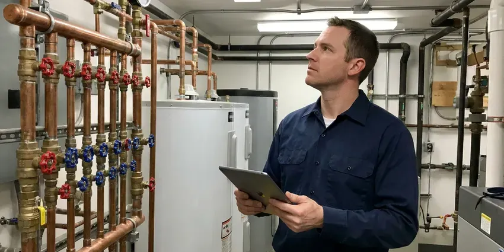

Water Leak Detection in Roseville, MI
Damp spot on the ceiling in Roseville, MI? CHV Plumbing pinpoints the source with acoustic and thermal gear before cutting.
- Meter Flow Testing
- Next-Day Testing
- Price Before We Start
- Licensed Plumbers

Book Water Leak Detection in Roseville, MI
Call (810) 380-5918. Most tests are booked within a day.
Locating Hidden Water Leaks in Roseville, MI
CHV Plumbing finds water leaks of every kind in Roseville, from a toilet flapper that never seals to a pinhole in a line under the slab. We start at the meter. The meter shows how fast water is escaping, and closing zones one by one shows where it goes.
Some of what we do:
- Slab leaks pinpointed within inches
- Checks on toilets, softeners and water heaters
- Pinhole leaks found behind drywall

Additional Plumbing Maintenance Services in Roseville, MI
Our maintenance and specialty plumbing services in Roseville, MI catch small problems before they become emergencies.




Sump Pump Maintenance near Roseville


Residential Plumbing Service in Roseville

Roseville commercial plumbing specialists

Customers
Why Choose CHV Plumbing for Water Leak Detection in Roseville, MI?
Soil that swells and shrinks makes early leak detection worth it, because water under the slab adds to the movement. Wet soil moves more. Freeze and thaw cycles shift the soil around buried pipes, which can crack older clay and cast iron sewer laterals.
- Mold Prevention, Moisture trapped in walls feeds mold quickly, so we find leaks early.
- Lower Bills, One running toilet can raise a bill noticeably, and we check every fixture.
- Zone Testing, Each part of the system gets isolated to find exactly which one leaks.
Citywide Coverage
We test homes and businesses throughout Roseville, from large irrigated lots with long service lines to compact townhomes on shared mains. Each has its own patterns. Townhomes often share walls and lines, so we test carefully before blaming the wrong unit.
Experienced Team
Our technicians have tracked down leaks in toilets, softeners, irrigation valves and underground service lines. Each has a pattern. They read the meter, the pressure gauge and the bill together to figure out which one is leaking before they start listening.
Safety-First Approach
We follow local plumbing codes and industry practice on every water leak call, including approved fittings and proper pipe supports. Corners cut come back. Our methods are safe for your home, family and pets.
Trusted Certified Roseville Plumbing Services Professionals
At CHV Plumbing, we are proud to offer certified plumbing services throughout Roseville, MI. Those papers on the wall mean something. Every repair, install and maintenance visit follows strict safety and quality rules, and the plumbers doing the work carry recognized industry credentials.
Call Us Now PHCC Plumbing Contractor Recognition
PHCC Plumbing Contractor Recognition Better Business Bureau (BBB) Accreditation
Better Business Bureau (BBB) Accreditation Angi Certified Pro
Angi Certified Pro ISO 9001 Quality Management Certification
ISO 9001 Quality Management CertificationWhere Hidden Leaks Turn Up in Roseville, MI
Hidden Wall and Ceiling Leaks in Roseville, MI
Stained drywall, peeling paint and a musty smell usually mean water inside the wall. Shower valves cause many of these. Our techs scan with thermal cameras and confirm with a moisture meter, working through shower pans, fittings and old pipe until we find it, so the drywall cut stays small.

Main Service Line Leaks in Roseville, MI
The service line carries full street pressure and can leak underground for a long time. Wet soil is often the only clue. We trace the line, listen for the leak and mark it for a targeted repair, usually suggesting replacement when the line is old galvanized or polybutylene.
Preventive Leak Audits in Roseville, MI
A yearly leak audit catches small problems early. We read the meter with everything off, test static pressure and inspect supply lines, shutoff valves and water heater fittings throughout homes and businesses in Roseville, MI. Older homes benefit most. We note aging connectors and stops before they fail.
Water Heater and Softener Leaks in Roseville
Softeners stuck in regeneration can drain water around the clock. That shows up on the bill. Water heaters leak at fittings, drain valves and relief valves, and a dripping relief valve often means high pressure or a failed expansion tank. We check both units on every visit.
Toilet and Fixture Leaks in Roseville, MI
Toilets waste more water than most people expect. A worn flapper leaks silently. We drop dye in each tank, check fill valves and inspect faucets, showers and supply lines for drips, and most of these get fixed in under an hour with parts from the truck. Savings show up on the next bill.
Underground Water Line Leaks in Roseville
The buried line from the meter to the house can leak for a long time without surfacing. Look for green stripes in a dry lawn. CHV Plumbing traces the pipe with an electronic locator, listens for the leak with a ground microphone and switches to tracer gas on plastic lines, which keeps the dig to one hole rather than a trench.
Slab Leaks and Foundations in Roseville
A slab leak wets the soil the house sits on. The soil is the worry. We listen for water escaping under the floor with acoustic gear, confirm hot-side leaks with a thermal camera and mark the spot within inches, which keeps the repair to a small hole or an overhead reroute, before the foundation starts to move in Michigan homes.

Irrigation Leak Detection in Roseville
Sprinkler and drip lines run underground across the whole yard, and they hide a lot of water loss. Stuck valves are common. We isolate the irrigation system from the house, run each zone and trace leaking lines, because cracked laterals and broken emitters can waste thousands of gallons before anyone notices.
Local Water Leak Testing in Roseville, MI
Searching for water leak detection near me in Roseville, MI turns up plenty of plumbers who guess and start cutting. CHV Plumbing tests first. Less drywall gets ruined.
Summer irrigation and pool top-offs push water use up every summer around Roseville, so we compare your bill to last year before blaming a leak. Context matters. It keeps us from chasing normal use and lets us give you practical tips for saving water.
CHV Plumbing at a Glance
- Fully licensed plumbing team covering Roseville, MI
- 24/7 emergency service with same-day scheduling
- Upfront, flat-rate pricing before work begins
- 4.9-star rated by 670+ Michigan customers
Roseville Map
Roseville Information
- Population
- 46,666
- Area codes
- 586/248/313
- Service area
- Roseville and communities within 40 miles
- Nearby
- St. Clair Shores, Warren, Sterling Heights, Royal Oak
A leak nobody sees can soak the soil next to or under a foundation for months, and wet soil makes foundation trouble worse in Roseville, MI. Freeze and thaw cycles shift the soil around buried pipes, which can crack older clay and cast iron sewer laterals.
Expert Services
Call CHV Plumbing for reliable plumbing work done by licensed pros in Roseville, MI.
Our Specialized Plumbing Services in Roseville, MI
At CHV Plumbing, you get every kind of plumbing service from one company across Roseville, MI. From leak detection to full system installs, our team works fast and charges fair prices on homes and commercial properties alike. Take a look at our core services below:


How We Track Down a Water Leak in Roseville, MI
We confirm, isolate, locate, then repair. Nothing in your Roseville home gets opened until the spot is marked.
Call (810) 380-5918
Describe your bill or the signs you see. We schedule and explain the detection fee.
Meter and Zone Tests
We read the meter flow rate and isolate each zone before using locating tools.
Locate and Fix
You get the leak location and repair prices. Most fixture and irrigation leaks get fixed that day.
Frequently Asked Questions About Water Leak Detection in Roseville
Most water leak detection in Roseville runs $200 to $600, based on the number of systems tested and where the leak sits. Repair prices come after. You get that price once the leak is found.
Some, yes. Watching the meter and dye testing toilets are easy checks, though slab and wall leaks take real equipment to locate without damage. Guesses tend to be expensive.
Repairs we complete carry a written workmanship warranty that covers our labor and the fittings we install for the stated term. Parts carry the manufacturer warranty. Smart valves include their own coverage.
It can. Freeze and thaw cycles shift the soil around buried pipes, which can crack older clay and cast iron sewer laterals. Water soaking the soil makes it swell, shrink or wash out, and that movement can shift or crack a foundation. Early detection limits the damage.
Figure on one to three hours for most homes. Multiple leaks take longer. Deep underground lines or several leaks can stretch the visit past three hours, since we confirm each spot with a second tool before we mark it.
Testing needs no permit. Bigger repairs might. Replacing major sections of pipe, rerouting lines or opening structural elements often requires a plumbing permit in Roseville, and CHV Plumbing handles that paperwork.
High bills, damp spots, water sounds with fixtures off and visible mold tend to point to a leak somewhere. So does a drop in pressure. If the meter moves with everything off, that settles it.
Most homes take between one and three hours. The time depends on where the leak is, how bad it is, how much of the property has to be tested and the type of pipe. Under-slab leaks run a little longer, since sound travels differently through concrete.
Hear From Customers Who Hired Our Plumbing Experts

Angela D.
Our sump pump quit during a storm and the water was an inch from the basement carpet. CHV Plumbing put in a new pump with a battery backup that same evening. We have had two heavy rains since. It kicked on both times.
Sump Pump · Roseville, MIPatricia H.
We had a slab leak that two other companies could not find. CHV Plumbing located it in under an hour with a listening device. They rerouted the line through the attic instead of breaking up the floor, so we kept our kitchen tile.
Slab Leak Repair · Troy, MI
Robert G.
The camera showed a full break in our clay sewer line near the street. CHV Plumbing replaced it with a trenchless pipe burst, so the only digging was two small pits in the yard. They let us watch the footage before and after.
Sewer Line Replacement · Sterling Heights, MI
Laura S.
Our 40 gallon tank started leaking from the bottom after thirteen years. The tech hauled the old one out, set a new unit with a fresh expansion tank, and had hot water running in about four hours. He took the old tank with him too.
Water Heater Replacement · Royal Oak, MI
Emily R.
The shutoff valve under our kitchen sink snapped off in my hand on a Sunday morning. CHV Plumbing had someone out by early afternoon. He replaced both angle stops with quarter turn valves and showed me where our main shutoff was, which I honestly did not know.
Plumbing Repair · Detroit, MI
Brian W.
I smelled gas behind the dryer and called right away. The plumber found a corroded flex connector, replaced it, and pressure tested the whole line before turning the gas back on. He let me watch the gauge hold steady for fifteen minutes.
Gas Line Repair · Royal Oak, MI